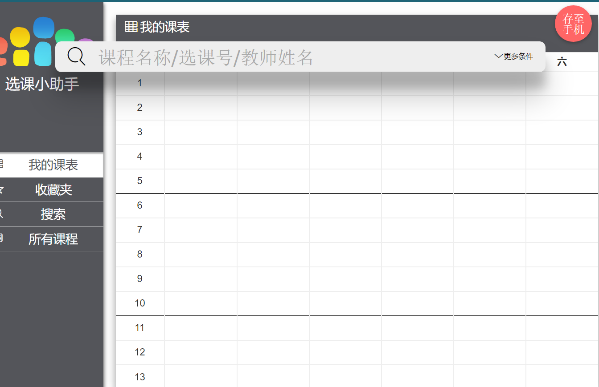
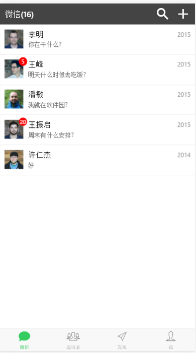
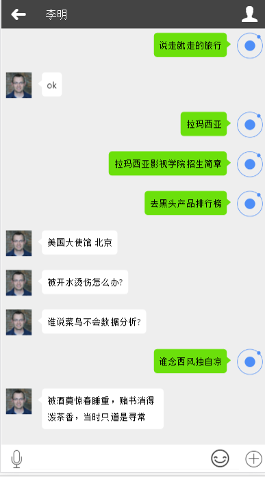
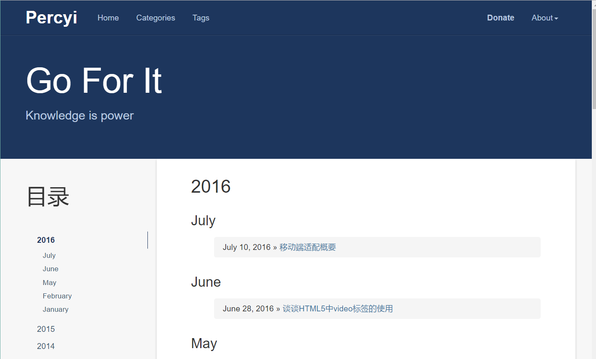

-
- Basic info. 基本信息
- 个人信息: 闫东凯 / 男 / 24岁
- 教育经历: 本科 / 河南工业大学
- 工作年限: 2年
- 英语水平: CET-6
- 常用ID: percyi
- Blog: www.percyi.site
- GitHub: www.github.com/percyi
-
- Experience. 项目与工作经验
北京沃丰时代科技数据有限公司Udesk（2016.4 - 至今）
-
Udesk组件库
项目介绍：
一套我们团队自行开发的组件库，供团队下所有项目使用。主要工作：
1. 参与团队内部通用组件开发，组建团队内部的组件库 2.参与制定团队项目开发规范
3.编写组件使用文档，指导新人使用内部组件
应用技术：emberjs/bootstrap/sass/git
-
客户管理管理系统（CRM）
产品需求分析：
udesk客服系统目前处理了大量的售前和售后咨询，这些客户都是可能转化为购买或二次购买的商机，通过CRM系统模块来进行管理。项目介绍：
本系统包括销售线索到客户，再到商机的跟进一整套流程，以及公海、数据统计分析等,前期CRM系统先供内部销售使用，由udesk客服系统将客户分配后， 数据全部导入CRM系统由销售进行跟进，销售在客户明下建立多个商机，可在商机的基础上进行销售流程跟进.现已对外销售该系统.主要工作：
1. 参与设计Udesk_crm系统的网站架构
2.和团队成员协作，开发系统项目页面和页面组件
3.负责维护Udesk_crm项目和指导新人了解和开发系统 4.编写单元测试(TDD)应用技术：emberjs/bootstrap/sass/git/mocha
-
商务智能系统（BI）
产品需求分析：
Udesk客服系统目前积累了大量的用户客服数据，通过合理的挖掘和分析，这些数据可以帮助客户更好的了解自身客服状况， 为以后客服甚至业务、产品的发展提供帮助。但是目前没有一个完整的平台来对这些数据进行汇总、清洗、建模和个性化分析有步骤的建立一个以客服领域为主的BI分析平台， 通过数据搜集、清洗、建模、分析，帮助用户获取个性化的数据分析结果，提供决策依据，提升工作质量。。主要工作：
1.参与旧BI系统的重构与和新BI系统中页面和功能的开发。应用技术：
emberjs/bootstrap/sass/git/echarts -
知识库系统（BI）
创建一个多租户的独立知识管理系统 管理员可以进行员工管理、员工组管理、岗位管理、角色管理、权限集管理、空间管理 每个空间内可以编辑分类和文章 每个文章支持历史版本查看
生茂光电科技股份有限公司 （2015.7 - 2016.5）
-
公司网站项目
参与制作公司的前端开发工作，根据设计图完成项目的大部分样式，使用div+css完成了页面的布局。和数据的展示。
使用原生js和jquery做了简单的开发工作。通过该项目，对js和jquery有了一定的实践。
个人项目
-
选课小助手（2016.03） 源代码 Demo
使用angularjs框架，sass预处理器实现的一个简单的选课系统，有课程收藏，搜索课程，添加课表等功能。
使用angularjs内的ngRoute实现页面跳转，实现页面之间的数据交互，使用gulp改进工作流
 -
模仿微信，webapp开发 源代码 Demo
使用angularjs+ionic框架，进行微信webapp开发，具有简单的路由跳转功能。
  -
模仿网易，webapp开发 源代码
使用angularjs+ionic框架开发，利用代理服务器，获取网易接口数据，ionic基于ui-route的路由跳转，实现了路由的嵌套。
使用mvvm模式实现模板前端渲染。通过自定义指令实现了网易评论楼层的嵌套。
-
个人网站 Demo
实现了一个个人博客网站的首页、文章、作品、关于等静态页面，合理运用HTML语义化标签。
基于bootstrap框架开发，实现多端适配。
 -
my-angularjs 源代码
通过《build your own Angularjs》一书，简单实现了一个angularjs框架。对angularjs内部的一些实现原理，有了一些了解。
-
others 源代码
实现过一个简单微型的js库，包括ajax、事件代理，dom，还有jquery的一些静态和实例方法。
-
- Skill. 技能清单
Web前端
-
HTML / CSS
能够编写语义化的 HTML，模块化的 CSS，完成页面的布局
-
JavaScript
熟悉原生Javascript
能运用模块化、面向对象的方式编程
熟悉angularjs的使用
-
其他
了解reactjs,了解组件化，模块化编程思想
了解nodejs的简单使用
个人评价
-
是一个有上进心的人，热爱生活和代码，始终相信coding changes world；热爱coding。
具有阅读英文文档的习惯，喜欢看官方文档。
学习能力强，以上绝大多数的技能都是从大四至今自学，实践，工作中学习掌握的
掌握 Git版本控制系统的使用
能够熟练使用 Markdown 进行写作
对前端的一些感受和认识
-
自从进入大四实习，接触网页开发，学习div+css写个静态页面，感觉很神奇，便一发不可收拾，进入前端这个行业
在学习工作期间，感受到了前端发展之迅速，其技术框架，日新月异，一些开发工具，类库，ui库更是让人看得眼花缭乱
网上一些前端学习资料更是数不胜数，今天刚学的知识，明天就可能过时。前端的一些新技术，新概念层次不穷，有时感到很疲惫
但是回头想想，正是这些新技术的变革和新概念的出现，才推动了前端的发展，才让前端有了旺盛的生命力。
StackOverflow的创始人Jeff Atwood说过一句话：any application that can be written in JavaScript, will eventually be written in JavaScript
这句话更是给我在前端的发展道路上注入了一针强心剂，激励我不断前进，不断前行。

闫东凯的简历
"Coding changes the world"
-
- Contact. 联系方式
- 电话: 17703931668
- 邮箱: percyan111@gmail.com
- 微信: percy
- QQ: 374239473
-
- Application. 应聘岗位
- 前端工程师
-
- Tech. 技能点
JavaScriptHTML+CSSEmberjsjQueryAngularjsnode.js
我是一个充满活力、对前端由衷热爱、善于发现问题的前端工程师。
我目前正在寻找前端工程师岗位，希望借此机会为贵司献上我的一点绵薄之力.